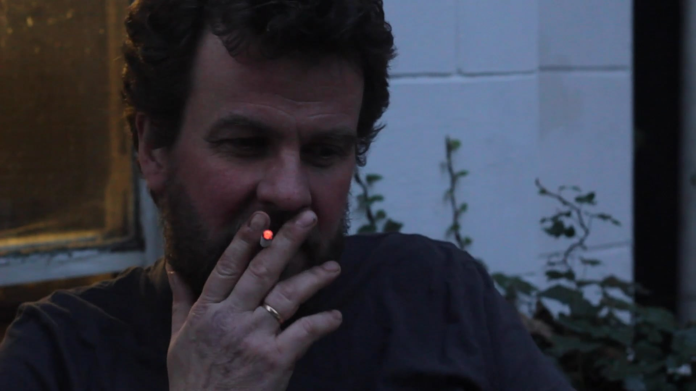

31mins, 2020
A Swedish restaurateur’s business is collapsing. To cope he recalls his idyllic childhood and rural Scandinavian identity, but can he stop the real world failure creeping into his imaginery refuge?
Essay narrative, combining elements of documentary and fiction.
With thanks to Peter Johansson, and the staff at Johansson's.
Installed at the exhibition Butterfly Blue Goodbye, ASC Brixton, 2020
WR SAUNDERS 2020